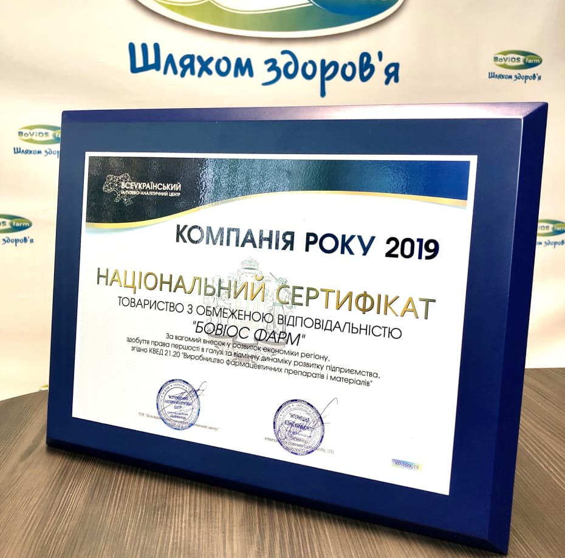
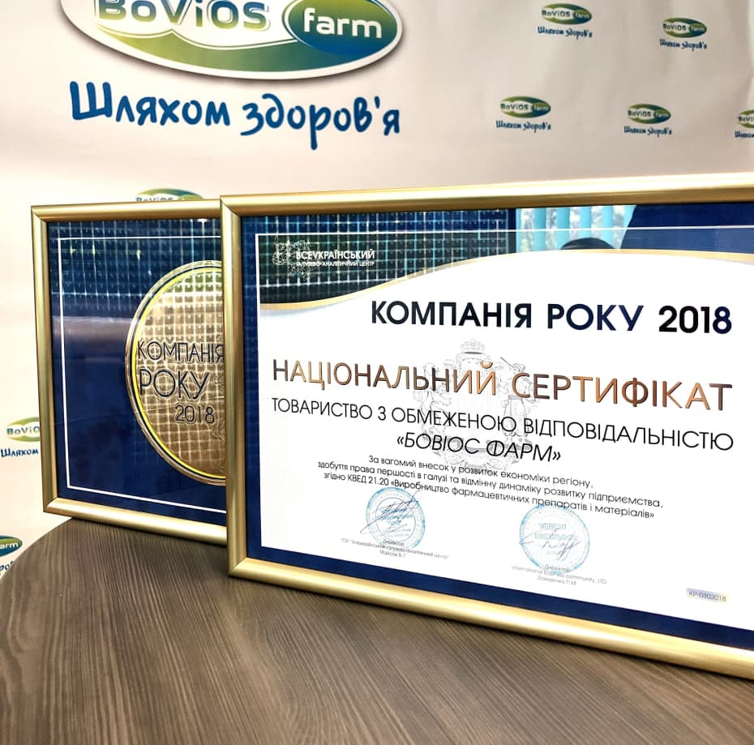

Дисфункція щитоподібної залози
й кардіоваскулярна патологія
Вплив дисфункції щитоподібної залози (ЩЗ) на серцево-судинну систему вивчається вже понад два століття (Cappola A. et al., 2019; Parry C., 1815).
детальніше
Всеукраїнський галузево-аналітичний центр визнав "Бовіос фарм" компанією року
За вагомий внесок у розвиток економіки регіону, здобуття права першості в галузі та відмінну динаміку розвитку підприємства,згідно КВЕД 21.20 «Виробництво фармацевтичних препаратів і матеріалів»
 Мета та пріоритети
Але щоб ви зрозуміли, звідки виникає це хибне уявлення людей, цуратись насолоди і вихваляти страждання, я розкрию перед вами всю картину і роз’ясню, що саме говорив цей чоловік, який відкрив істину, якого я б назвав зодчим щасливого життя.
Дійсно, ніхто не відкидає, не зневажає, не уникає насолод тільки через те, що це насолоди, але лише через те, що тих, хто не вміє розумно вдаватися насолоді, осягають великі страждання. Так само як немає нікого, хто полюбивши, вважав за краще і зажадав би саме страждання тільки за те, що це страждання, а не тому, що інший раз виникають такі обставини, коли страждання і біль приносять якесь і чималу насолоду.
Якщо скористатися найпростішим прикладом, то хто з нас став би займатися якими б то не було тяжкими фізичними вправами, якщо б це не приносило з собою якоїсь користі? І хто міг би по справедливості дорікнути прагнення до насолоди, яке не несло б з собою ніяких неприємностей, або того, хто уникав би такого страждання, яке не приносило б з собою ніякої насолоди?
Мета та пріоритети
Але щоб ви зрозуміли, звідки виникає це хибне уявлення людей, цуратись насолоди і вихваляти страждання, я розкрию перед вами всю картину і роз’ясню, що саме говорив цей чоловік, який відкрив істину, якого я б назвав зодчим щасливого життя:
- Дійсно, ніхто не відкидає, не зневажає, не уникає насолод тільки через те, що це насолоди, але лише через те, що тих, хто не вміє розумно вдаватися насолоді, осягають великі страждання.
- Так само як немає нікого, хто полюбивши, вважав за краще і зажадав би саме страждання тільки за те, що це страждання, а не тому, що інший раз виникають такі обставини, коли страждання і біль приносять якесь і чималу насолоду.
- Якщо скористатися найпростішим прикладом, то хто з нас став би займатися якими б то не було тяжкими фізичними вправами, якщо б це не приносило з собою якоїсь користі?
Мета та пріоритети
Але щоб ви зрозуміли, звідки виникає це хибне уявлення людей, цуратись насолоди і вихваляти страждання, я розкрию перед вами всю картину і роз’ясню, що саме говорив цей чоловік, який відкрив істину, якого я б назвав зодчим щасливого життя:
- Дійсно, ніхто не відкидає, не зневажає, не уникає насолод
- Через те, що це насолоди, але лише через те, що тих, хто не вміє розумно вдаватися насолоді, осягають великі страждання
- Звідки виникає це хибне уявлення людей, цуратись насолоди і вихваляти страждання, я розкрию перед вами всю картину і роз’ясню, що саме говорив цей чоловік, який відкрив істину, якого я б назвав зодчим щасливого життя
- Втім, тут дуже легко і просто провести відмінності, тому що, коли ми вільні і нам надана повна можливість вибору бажаного